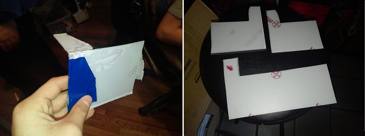

We needed to create bumper shields because the debris on the field interfered with the tread. We had a prototype on the left,

Evan and I cut the bumper shields out of polycarbonate with two made for the front and two for the back. To do this, we were trained how to use a bandsaw. We cut them down so that they will be moveable.
Evan and I will attach the bumpers, and expect them to work well against debris. We do still need to test it on the ramp. The robot's previous state without bumper shields was too gradually damaging to the robot, especially to the things on the very edges of the robot. Now that we have the shields in place we have relatively safety from debris on the field causing damage to the robot.